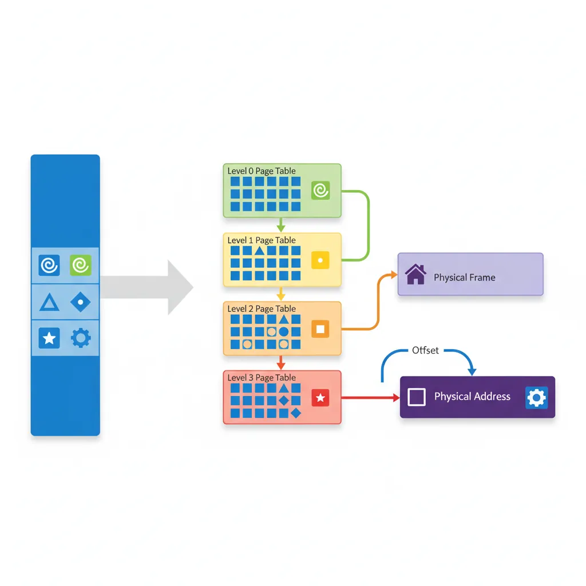
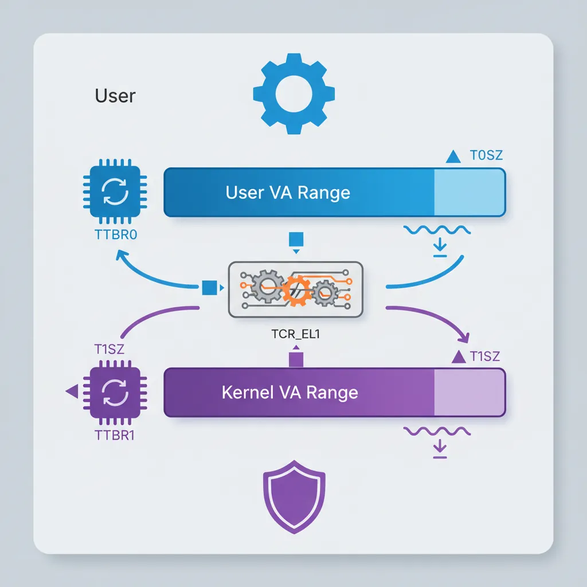
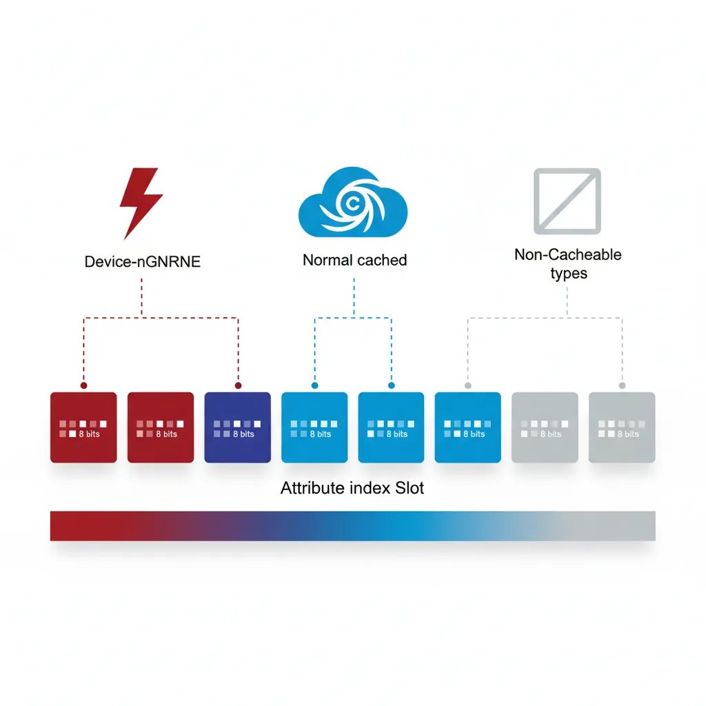
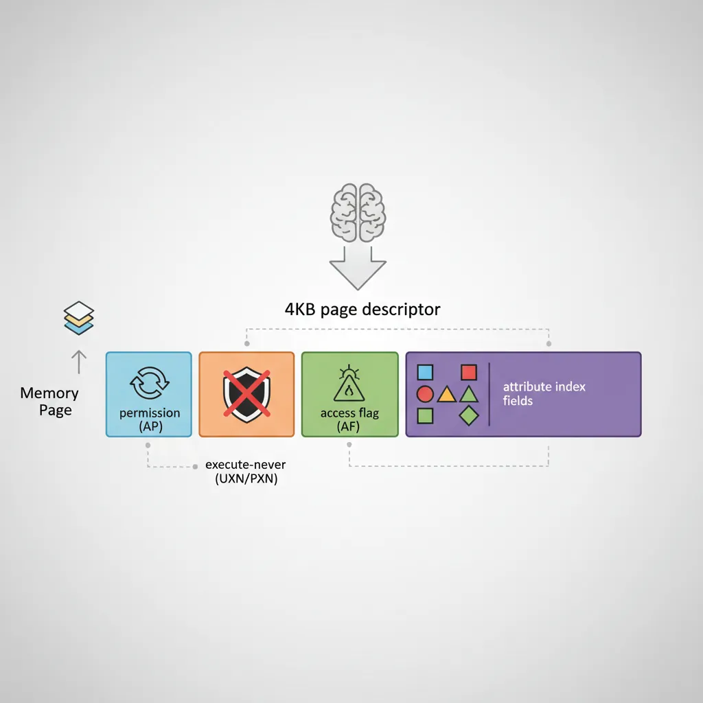
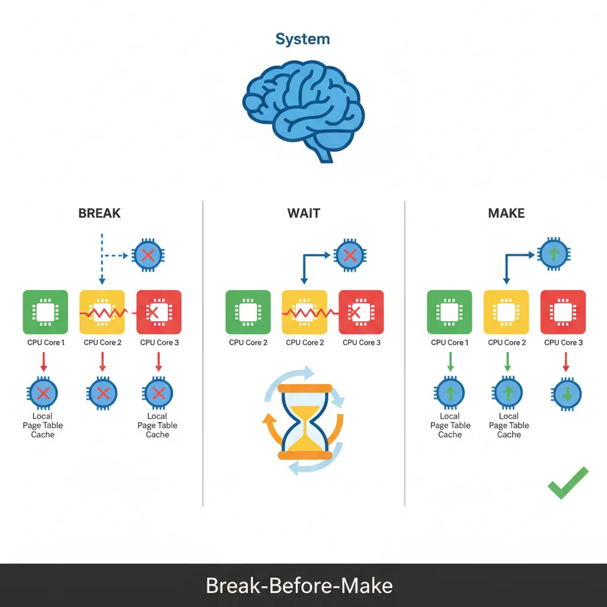

Introduction & Translation Overview
ARM Assembly Mastery
Architecture History & Core Concepts
ARMv1→v9, RISC philosophy, profilesARM32 Instruction Set Fundamentals
ARM vs Thumb, registers, CPSR, barrel shifterAArch64 Registers, Addressing & Data Movement
X/W regs, addressing modes, load/store pairsArithmetic, Logic & Bit Manipulation
ADD/SUB, bitfield extract/insert, CLZBranching, Loops & Conditional Execution
Branch types, link register, jump tablesStack, Subroutines & AAPCS
Calling conventions, prologue/epilogueMemory Model, Caches & Barriers
Weak ordering, DMB/DSB/ISB, TLBNEON & Advanced SIMD
Vector ops, intrinsics, media processingSVE & SVE2 Scalable Vector Extensions
Predicate regs, gather/scatter, HPC/MLFloating-Point & VFP Instructions
IEEE-754, scalar FP, rounding modesException Levels, Interrupts & Vector Tables
EL0–EL3, GIC, fault debuggingMMU, Page Tables & Virtual Memory
Stage-1 translation, permissions, huge pagesTrustZone & ARM Security Extensions
Secure monitor, world switching, TF-ACortex-M Assembly & Bare-Metal Embedded
NVIC, SysTick, linker scripts, low-powerCortex-A System Programming & Boot
EL3→EL1 transitions, MMU setup, PSCIApple Silicon & macOS ABI
ARM64e PAC, Mach-O, dyld, perf countersInline Assembly, GCC/Clang & C Interop
Constraints, clobbers, compiler interactionPerformance Profiling & Micro-Optimization
Pipeline hazards, PMU, benchmarkingReverse Engineering & ARM Binary Analysis
ELF, disassembly, CFR, iOS/Android quirksBuilding a Bare-Metal OS Kernel
Bootloader, UART, scheduler, context switchARM Microarchitecture Deep Dive
OOO pipelines, reorder buffers, branch predictVirtualization Extensions
EL2 hypervisor, stage-2 translation, KVMDebugging & Tooling Ecosystem
GDB, OpenOCD/JTAG, ETM/ITM, QEMULinkers, Loaders & Binary Format Internals
ELF deep dive, relocations, PIC, crt0Cross-Compilation & Build Systems
GCC/Clang toolchains, CMake, firmware genARM in Real Systems
Android, FreeRTOS/Zephyr, U-Boot, TF-ASecurity Research & Exploitation
ASLR, PAC attacks, ROP/JOP, kernel exploitEmerging ARMv9 & Future Directions
MTE, SME, confidential compute, AI accelAArch64 virtual address translation converts a 64-bit virtual address to a physical address through a multi-level page table walk. Two independent address spaces exist: TTBR0_EL1 covers user space (VA bits[63:56] = 0x00) and TTBR1_EL1 covers kernel space (VA bits[63:56] = 0xFF). Both ranges and granule choices are encoded in TCR_EL1. Memory attributes (cacheability, shareability, device type) come from MAIR_EL1, indexed by a 3-bit AttrIndx field in each page table descriptor.

Consider translating virtual address 0x0000_0040_1234_5678 with T0SZ=25 and 4KB granule:
Step 1 — Top-bit check: Bits[63:56] = 0x00 → use TTBR0_EL1 (user space).
Step 2 — L0 index: VA[47:39] = 0b000000010 = 2 → read entry at TTBR0 + 2×8 bytes. This is a Table entry pointing to L1 table base.
Step 3 — L1 index: VA[38:30] = 0b000000000 = 0 → read L1[0]. If this is a 1GB Block entry, translation is done (PA = Block base | VA[29:0]). Otherwise, it's a Table entry pointing to L2.
Step 4 — L2 index: VA[29:21] = 0b010010001 = 145 → read L2[145]. If 2MB Block entry, PA = Block base | VA[20:0]. Otherwise, Table → L3.
Step 5 — L3 index: VA[20:12] = 0b001000101 = 69 → read L3[69]. This is a 4KB Page entry. Final PA = Page base | VA[11:0] (offset 0x678).
The total walk costs 4 sequential memory reads — in the worst case ~40 cycles without TLB caching. The TLB caches the final PA, making subsequent accesses to the same page a single-cycle lookup.
Kernel/User Isolation via TTBR0/TTBR1
ARM's split address space design provides natural kernel/user isolation. User processes use TTBR0_EL1 (lower VA range, 0x0000...) and can only access pages marked with AP=01 (EL1/EL0 RW) or AP=11 (EL1/EL0 RO). The kernel's TTBR1_EL1 (upper VA range, 0xFFFF...) maps with AP=00 (EL1 only). On context switch, the kernel changes TTBR0_EL1 to the new process's page table — TTBR1_EL1 stays constant since kernel mappings are shared. Post-Spectre, Linux on ARM64 implements KPTI (Kernel Page Table Isolation): when running in EL0, the kernel TTBR1 page tables are replaced with a minimal "trampoline" table that only maps the exception vectors. On EL1 entry, the handler quickly switches to the full kernel tables. This prevents Meltdown-style attacks where EL0 speculatively reads kernel memory through TTBR1.
TCR_EL1 — Translation Control
T0SZ / T1SZ Address Range
TCR_EL1.T0SZ defines the size of the TTBR0 address space as 2^(64-T0SZ) bytes. Linux typically uses T0SZ=25 giving a 512 GB user address space (0x0000_0000_0000_0000 to 0x0000_007F_FFFF_FFFF). TCR_EL1.T1SZ mirrors this for the kernel TTBR1 range. Addresses outside both ranges generate an address size fault.

Granule Selection (TG0/TG1)
TG0/TG1 select the page granule: 00=4KB, 01=64KB, 10=16KB. The 4KB granule is the most common (used by Linux) and gives 512-entry tables at each level. The 64KB granule reduces walk depth and TLB pressure for workloads with large contiguous allocations (common in HPC/NUMA systems like Cavium Thunder).
Walk Levels Derived from T0SZ
// TCR_EL1 setup for Linux-style config:
// T0SZ=25, T1SZ=25, 4KB granule, inner shareable, write-back cacheable
LDR x0, =0x00000015B5194515
// Bit breakdown:
// [5:0] T0SZ = 25 (0x19)
// [7] EPD0 = 0 (TTBR0 walk enabled)
// [9:8] IRGN0 = 01 (inner WB WA cacheable)
// [11:10] ORGN0 = 01 (outer WB WA cacheable)
// [13:12] SH0 = 11 (inner shareable)
// [15:14] TG0 = 00 (4KB granule)
// [21:16] T1SZ = 25 (0x19)
// [23] EPD1 = 0
// [29:28] TG1 = 10 (4KB granule for TTBR1, encoding differs!)
// [35:32] IPS = 100 (48-bit phys addr space)
MSR TCR_EL1, x0
ISBMAIR_EL1 — Memory Attributes
Attribute Index (AttrIndx)
MAIR_EL1 holds eight 8-bit attribute encodings (indices 0–7). Each page table descriptor references one via its 3-bit AttrIndx field. A typical kernel setup uses: index 0 = Device-nGnRnE (MMIO, strictly ordered), index 1 = Normal, Inner/Outer Write-Back, Read-Allocate, Write-Allocate (cached RAM), index 2 = Normal, Non-Cacheable (uncached DMA buffers).

// MAIR_EL1 encoding for three common attribute types
// Attr[0] = 0x00 = Device-nGnRnE (strictly-ordered MMIO)
// Attr[1] = 0xFF = Normal, Inner/Outer WB/WA/RA (cacheable)
// Attr[2] = 0x44 = Normal, Inner/Outer Non-Cacheable
LDR x0, =0x000000000044FF00
MSR MAIR_EL1, x0
ISBDevice vs Normal Memory
Device memory (Device-nGnRnE / nGnRE / nGRE / GRE) is used for memory-mapped I/O registers. Accesses to Device memory are always in program order relative to other Device accesses to the same peripheral, preventing the hardware from reordering reads or writes. Normal memory allows full out-of-order and speculative access; without explicit barriers it may be reordered by both the CPU and memory system.
Page Table Descriptors
Block vs Page vs Table Entries
A 4KB-granule descriptor is 8 bytes. Bits[1:0] identify the type: 00/01 = invalid, 11 = table (points to next-level table), 01 at leaf = page (4 KB), 01 at L1/L2 = block (1 GB or 2 MB respectively). Block entries eliminate one or two levels of walk, reducing TLB miss latency for large contiguous regions. Linux uses 2 MB huge pages extensively for the kernel image and large anonymous mappings.

AP, UXN, PXN, AF, SH bits
// 4KB page descriptor bit fields (simplified):
// [0] Valid bit
// [1] Type (1=block/page, 0=table at non-leaf)
// [4:2] AttrIndx — index into MAIR_EL1 (bits[4:2])
// [5] NS — Non-Secure (EL3 only)
// [7:6] AP — Access Permissions
// 00 = EL1 RW, EL0 no access
// 01 = EL1/EL0 RW
// 10 = EL1 RO, EL0 no access
// 11 = EL1/EL0 RO
// [9:8] SH — Shareability (10=outer, 11=inner shareable)
// [10] AF — Access Flag (must be 1 or take AF fault on first access)
// [11] nG — Not Global (ASID-tagged if set)
// [47:12] OA — Output (physical) address[47:12]
// [51:48] (RES0 for 48-bit PA)
// [53] PXN — Privileged Execute Never
// [54] UXN — Unprivileged Execute Never
// Example: EL1 RW, EL0 no access, cached, inner shareable, AF=1
// AttrIndx=1 (Normal cached), AP=00, SH=11, AF=1
// Descriptor bits: AF|SH|AP|AttrIndx | OA | valid+type
// = 0x0060000000000703 (for OA=0x0, type=page)
MOV x0, #0x703 // bits[11:0]: AF=1, SH=11, AttrIndx=001, valid+type
ORR x0, x0, #(1 << 10) // AF bit already included above
ORR x0, x0, x5 // OR in physical page address (x5 = page_phys_addr)Building an Identity Map at Boot
Level-0 & Level-1 Tables
An identity map (VA == PA) is the simplest starting point for boot: the MMU is enabled while code is still running at physical addresses. With T0SZ=25 and 4KB granule, the walk is L0→L1→L2→L3 for 4KB pages, or terminates at L1 for 1 GB blocks. A minimal boot identity-map uses a single L0 table (4KB, 512×8-byte entries) pointing to a few L1 block entries.
// Minimal identity map: map 0x0–0x40000000 (1 GB) as Device,
// and 0x40000000–0x80000000 (1 GB) as Normal cached.
// Page table base in x9 (4KB aligned, zero-filled before use)
// L0[0] → L1 table
ADR x0, l1_table
ORR x0, x0, #3 // Table descriptor (valid=1, type=table)
STR x0, [x9] // L0 entry 0
// L1[0] = 1 GB block: PA 0x0, Device-nGnRnE (AttrIndx=0, AP=00, AF=1)
MOV x1, #(1 << 10) // AF=1
ORR x1, x1, #(3 << 8) // SH=11 (inner shareable)
ORR x1, x1, #1 // valid=1, block (type=01 at L1)
STR x1, [x10] // l1_table[0]
// L1[1] = 1 GB block: PA 0x40000000, Normal cached (AttrIndx=1)
MOV x2, #0x40000000 // physical base
ORR x2, x2, #(1 << 10) // AF
ORR x2, x2, #(3 << 8) // SH inner
ORR x2, x2, #(1 << 2) // AttrIndx=1
ORR x2, x2, #1 // valid+block
STR x2, [x10, #8] // l1_table[1]Enabling the MMU (SCTLR_EL1.M)
// Enable MMU: write TTBR0, TTBR1, TCR, MAIR, then set SCTLR_EL1.M
ADR x0, l0_table
MSR TTBR0_EL1, x0
ADR x0, kernel_l0_table
MSR TTBR1_EL1, x0
// Ensure all page table writes are visible before enabling MMU
DSB ISH
TLBI VMALLE1IS // Invalidate all TLB entries
DSB ISH
ISB
MRS x0, SCTLR_EL1
ORR x0, x0, #(1 << 0) // M=1: enable MMU
ORR x0, x0, #(1 << 2) // C=1: data cache enable
ORR x0, x0, #(1 << 12) // I=1: instruction cache enable
MSR SCTLR_EL1, x0
ISB // Instruction barrier after MMU enableHuge Pages & Contiguous Hint
Beyond 2 MB L2 blocks, AArch64 supports a Contiguous Hint (bit[52] in descriptors): when 16 consecutive naturally-aligned L3 page descriptors all have Contiguous=1, the TLB may cache them as a single 64 KB entry, reducing TLB pressure for hot large-page regions. Linux uses this for anonymous huge pages on systems without 2 MB aligned physical memory. The kernel also supports 1 GB L1 block mappings for areas like device RAM on server SoCs where the full gigabyte is contiguous.
TLB Maintenance
TLBI Operations
// TLBI syntax: TLBI <op>{IS}{nXS}, {Xt}
// IS = inner-shareable broadcast (affects all cores in shareability domain)
// nXS = not extended shareability
// Invalidate all EL1 entries (broadcast to all PEs)
TLBI VMALLE1IS
// Invalidate a specific VA in EL1, non-broadcast (current PE only)
// Xt = VA[55:12] shifted — bits[63:44]=ASID, bits[43:0]=VA>>12
MOV x0, x5, LSR #12 // VA page number
TLBI VAE1, x0 // Invalidate by VA in EL1
// Invalidate all entries for a specific ASID
MOV x0, #(1234 << 48) // ASID in bits[63:48]
TLBI ASIDE1IS, x0
// Always use DSB before and after TLBI in critical sections
DSB ISHST // Ensure preceding stores (page table writes) complete
TLBI VMALLE1IS
DSB ISH // Ensure TLBI completes before continuing
ISBBreak-Before-Make Rule
When changing a live page table entry from one valid mapping to another (e.g., changing permissions or PA), the ARM architecture requires Break-Before-Make: first write an invalid descriptor, execute a DSB, issue the appropriate TLBI, issue another DSB, then write the new valid descriptor. Skipping this can expose a window where both old and new mappings coexist in different cores' TLBs, causing undefined behaviour. For read-only promotions (adding a restriction) the rule is relaxed, but erring on the side of BBM is the safe default.

Hands-On Exercises
Task: Extend the boot identity map to cover 4 regions: 0x00000000–0x3FFFFFFF as Device-nGnRnE (MMIO), 0x40000000–0x7FFFFFFF as Normal RW cached (kernel data), 0x80000000–0xBFFFFFFF as Normal RO+PXN cached (user code mapped as read-only), and 0xC0000000–0xFFFFFFFF as Normal RW Non-Cacheable (DMA buffers). Use L1 block entries and verify each region's attributes by reading back the descriptors in GDB.
Hint: You need four L1 entries. Set AttrIndx=0 for Device, AttrIndx=1 for cached Normal, AttrIndx=2 for non-cacheable. Use AP[7:6] to control read/write permissions.
Task: Write a function that implements the Break-Before-Make pattern: given a pointer to a live L3 page table entry and a new descriptor value, (1) store an invalid entry, (2) DSB ISH, (3) TLBI VAE1IS with the correct VA, (4) DSB ISH, (5) store the new valid entry, (6) DSB ISH + ISB. Test by changing a page from RW to RO while another thread reads it — verify the reader takes a permission fault after the change.
Hint: The TLBI operand format is: bits[63:48]=ASID, bits[43:0]=VA≡12. Zero the ASID field for global pages.
Task: Create page table entries with AF=0 for a 64KB region. Write an AF fault handler (ESR_EL1 EC=0b100100, ISS DFSC=0b001001) that sets the AF bit in the faulting descriptor, issues TLBI+DSB, and returns to the faulting instruction. Count how many AF faults you take when linearly scanning the region — verify it equals exactly 16 (one per 4KB page).
Hint: The FAR_EL1 gives the faulting VA. Walk the page table from TTBR0 to find the L3 entry, then OR in bit[10]. Remember to use atomic ORR if other cores might access the same descriptor.
Page Table Configuration Generator
Use this tool to plan and document your MMU configuration — address space layout, granule sizes, memory regions with attributes, and TLBI maintenance strategy. Download as Word, Excel, or PDF for your system design documentation.
Page Table Configuration Planner
Document your MMU setup: address ranges, attributes, and TLB strategy. Download as Word, Excel, or PDF.
All data stays in your browser. Nothing is sent to or stored on any server.
Conclusion & Next Steps
We configured the AArch64 MMU from scratch: TCR_EL1 T0SZ/T1SZ/TG0/TG1/IPS, MAIR_EL1 attribute indices for Device and Normal memory, page table descriptor fields (AP, UXN, PXN, AF, SH, AttrIndx), the step-by-step address translation walk, kernel/user isolation via split TTBR0/TTBR1 address spaces and KPTI, building a boot identity map with L1 block entries, enabling the MMU via SCTLR_EL1.M with proper cache and barrier sequencing, huge pages and the Contiguous Hint, and TLBI operations with the Break-Before-Make rule.